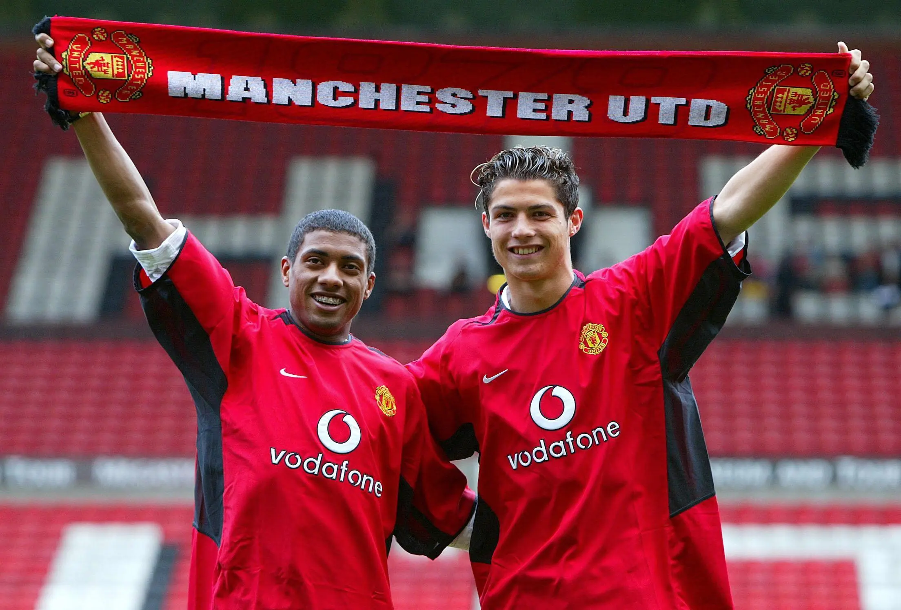
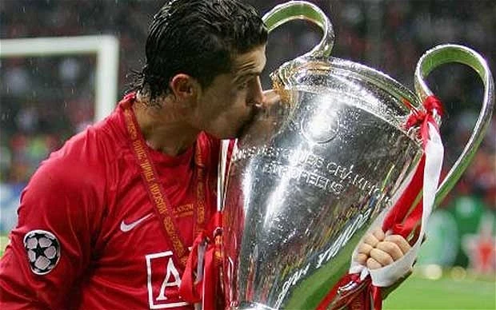
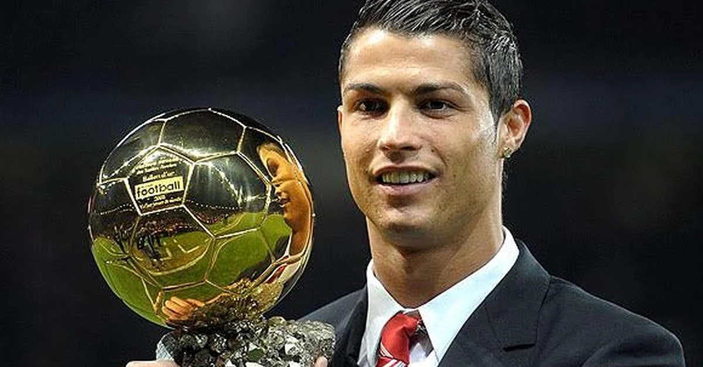
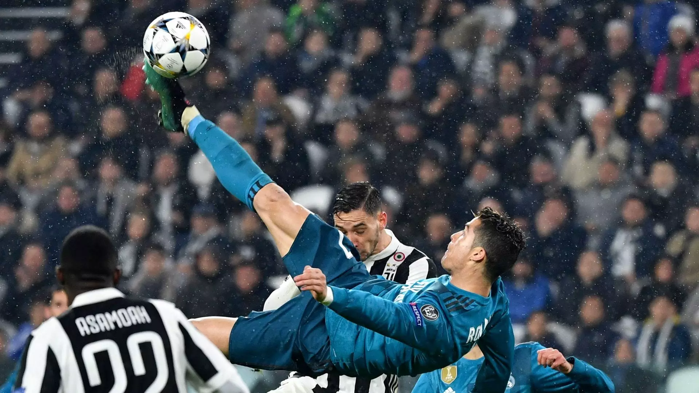
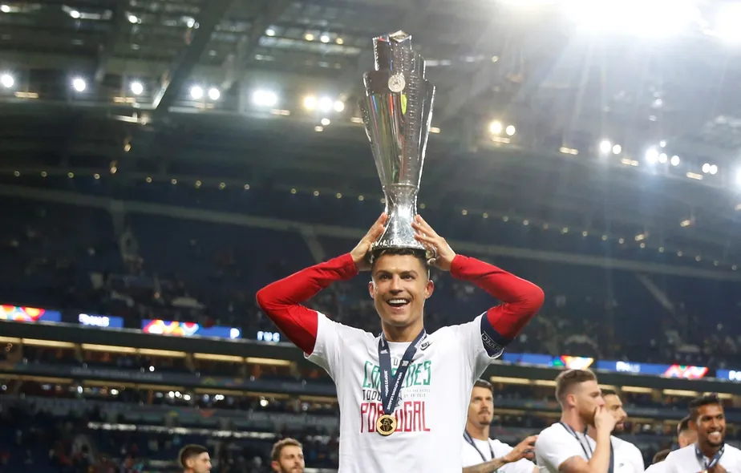
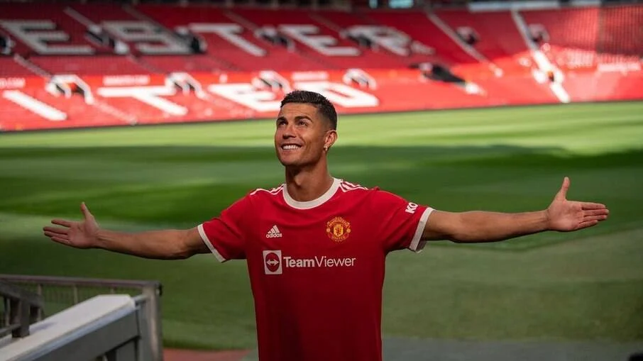
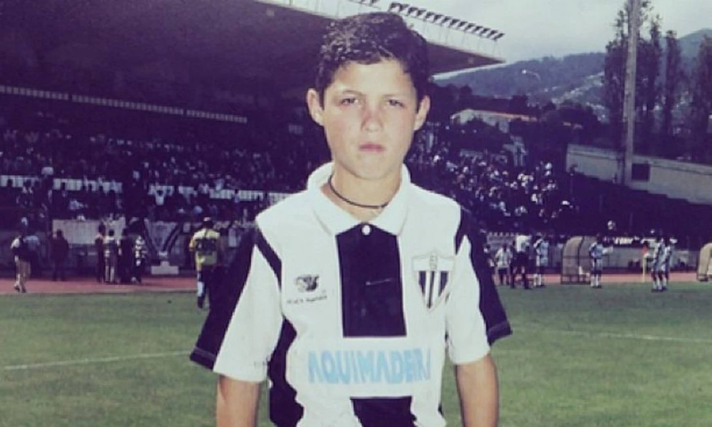
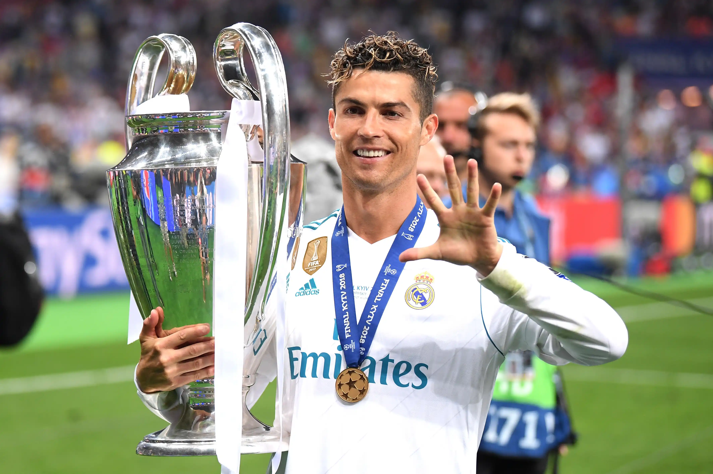
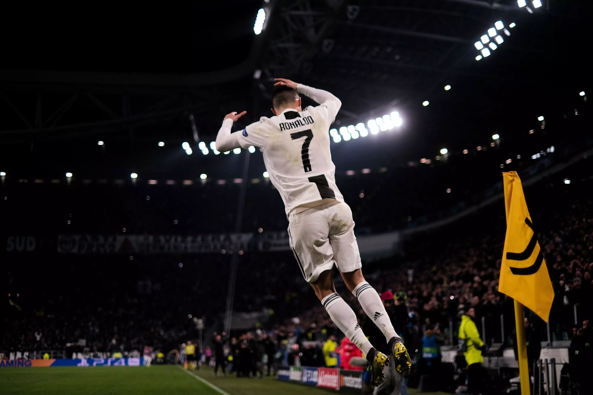

844
GolsMarcados
>120.000
Minutos ao longo de suacarreira profissional
>30
Títulos na carreira
Principais Momentos

Estreia Profissional no Sporting CP (2002)

Transferência para o Manch. United (2003)

Primeira Champions League (2008)

Primeira Ballon d'Or - Bola de Ouro - (2008)

Transferência para o Real Madrid (2009)

Gol de Bicicleta na Juventus (2018)

Vitória na Liga das Nações UEFA (2019)

Quebra do Recorde de Gols (2021)
Curiosidades
Primeiro Vencedor do Prêmio Puskas
O Prêmio Puskas, concedido ao gol mais bonito marcado no ano, foi iniciado em 2009 e Cristiano Ronaldo foi o primeiro ganhador da premiação. Ele o conquistou por seu gol de longa distância contra o FC Porto na Liga dos Campeões de 2008/09, pelo Manchester United.
Um homem caridoso
Fora dos campos, Ronaldo é amplamente reconhecido pelo seu notável trabalho filantrópico. Em 2015, deu origem à Fundação Cristiano Ronaldo, uma entidade voltada para auxiliar crianças em situações de vulnerabilidade.
Maior artilheiro por seleções
Tendo ultrapassado a marca dos 120 gols pela seleção portuguesa, ele se estabeleceu como o maior goleador internacional entre os jogadores de futebol masculino ativos. Esta conquista é apenas uma entre as muitas que adornam a carreira deste atleta extraordinário.
Homenagem a presidente dos EUA
Cristiano Ronaldo foi nomeado em homenagem ao ex-presidente dos EUA, Ronald Reagan. Ele nasceu apenas um mês depois que o ator e político havia sido empossado para seu segundo mandato na Casa Branca. Acredita-se que sua mãe era fã do 40º presidente dos EUA.
Cristiano Ronaldo
"Na minha cabeça, eu sou o melhor. Se não pensarmos assim não temos ambição. Eu tenho de pensar que, na minha profissão, eu sou o melhor. Posso não ser, mas na minha cabeça eu sou o melhor."
Um pouco sobre cr7
Nascido em 5 de fevereiro de 1985 na Ilha da Madeira, Portugal, Cristiano Ronaldo surgiu do cenário modesto da infância para se tornar uma das maiores estrelas do futebol mundial. Seu talento precoce chamou a atenção desde cedo, levando-o do Sporting CP para o Manchester United em 2003.


A transferência recorde para o Real Madrid em 2009 marcou o ápice da carreira de Ronaldo. Sua combinação única de habilidade e mentalidade implacável o levou a bater diversos recordes e a conquistar quatro títulos da Liga dos Campeões com o clube.
Além das façanhas esportivas, Ronaldo é um ícone global. Sua dedicação e presença nas redes sociais o tornaram uma figura inspiradora. Sua busca pela perfeição e jornada desde origens modestas até o estrelato inspiram pessoas de todas as idades a seguir seus sonhos.
